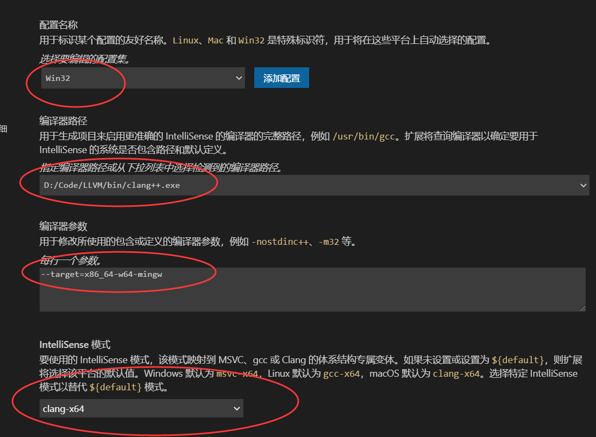

方便小伙伴们查阅，也方便初学者摆脱DEV-C++，干脆写一份自己的vscode配置指南好了
插播一下日常
最近刚看完超炮3，超炮里我果然还是更喜欢食蜂操祈
毕竟心理掌握メンタルアウト 还是很令人羡慕的能力

大赞超炮
Compiler and PATH
对于编译器，我个人倒是有一些偏好，还在要是嫌麻烦选用GNU GCC就好了
我个人倒是对LLVM Clang情有独钟。所以这里我个人会以LLVM Clang为编译器的配置为例。
当然这里也会讲GNU GCC如何配置
这里介绍一个下载编译好的现代的编译器的网站(不像某DEV-C++还用远古的GCC4.9)
WinLibs standalone build of GCC and MinGW-w64 for Windows
打开来是这样的
然后在标题下面点击Download，然后直接选择有LATEST标志的就可以了，这里选择without LLVM/Clang/LLD/LLDB里的7-Zip archive
下载完后会得到如下样式的文件
解压到任意一个不带中文字符的目录，这里我直接解压到D盘了
在环境变量里面添加你解压mingw64的地方，再在后面加上bin
类似于之类的D:\mingw64\bin
然后下载LLVM，并安装，而且在安装界面里选择将LLVM加到PATH中
LLVM Compiler
为什么不在刚才那里下载带有LLVM的版本呢？
winlibs里的llvm和clang是以x86_64-w64-mingw为target的编译的，如果后来要在visual studio里编译项目时使用这里winlibs的llvm时会出bug前几天编译x265爆了换了LLVM官网的binary才行，所以我们先使用target为 x86_64-pc-windows-msvc的llvm，后面再在vscode中加入--target=x86_64-w64-mingw就行了
为什么要下载MinGW呢？
MinGW里带有GNU GCC所带的include文件，这是LLVM所不具备的，LLVM一般都是用的GNU GCC的头文件或者是使用MSVC的头文件
这样只要你在PowerShell中输入clang++ --version或者gcc --version有提示就说明你成功了
Visual Studio Code配置
接下来进入正文
安装中文和C/C++插件

选择一个存你写的代码的文件夹

在左上角文件处选择打开文件夹
注意文件夹路径不要存在中文，要不然gdb调试会出问题
先写个HelloWorld

然后按住Ctrl + F5会出现如下界面

这里选择 C++ (GDB/LLDB) 然后选择 g++生成

然后会在你的文件夹里的创建和一个.vscode文件夹里面有launch.json和tasks.json文件
如果是只使用GNU GCC的大佬不需要更改如下的文件点击右边的目录可以跳到下面的c_cpp_properties.json的配置
launch.json的配置
像我一样使用LLVM编译器的话，这里需要调整一下，这里给出范例
如下，将g++的名字改成clang++(因为后面的tasks.json也会使用这样的名字)
1 | { |
为什么在使用LLVM Clang Compiler的情况下不使用lldb,而是gdb?
因为Windows下vscode使用lldb好像有bug，我也不知道为什么使用不了，填了lldb就是不能调试
tasks.json的配置
同样打开tasks.json，修改里面的内容为
1 | { |
注意在"command"这一栏，填入你的clang安装的位置(这里填入clang++，因为我主要写cpp文件)
在与g++的配置文件不同的地方是args中加入了
1 | "-static-libgcc", |
主要是为了让clang以mingw为target，使用mingw的头文件，要不然他会去寻找MSVC的头文件，没装Visual Studio的情况会表现为找不到头文件，装了的情况会表现为编译出现一些未定义标识符的错误
c_cpp_properties.json的配置
按Ctrl + Shift + P呼出命令框
输入config 出现下图，选择C/C++ 编辑配置(UI)

调整下图3个位置为以下选项(使用GNU GCC的同学)

调整下图4个位置为以下选项(使用LLVM的同学)

llvm要参数里加入--target=x86_64-w64-mingw
保存后重启以下vscode，这样应该就完全配置完了
点开cpp文件后直接按Ctrl + F5运行，第一次运行会以调试模式运行，点上方停止再按一次Ctrl + F5就行了